Artà · Mallorca
The Mediterranean, made for sharing.
Freshly cooked paellas and rice dishes, Mediterranean recipes and the warm welcome of a family-run restaurant in the heart of Artà.
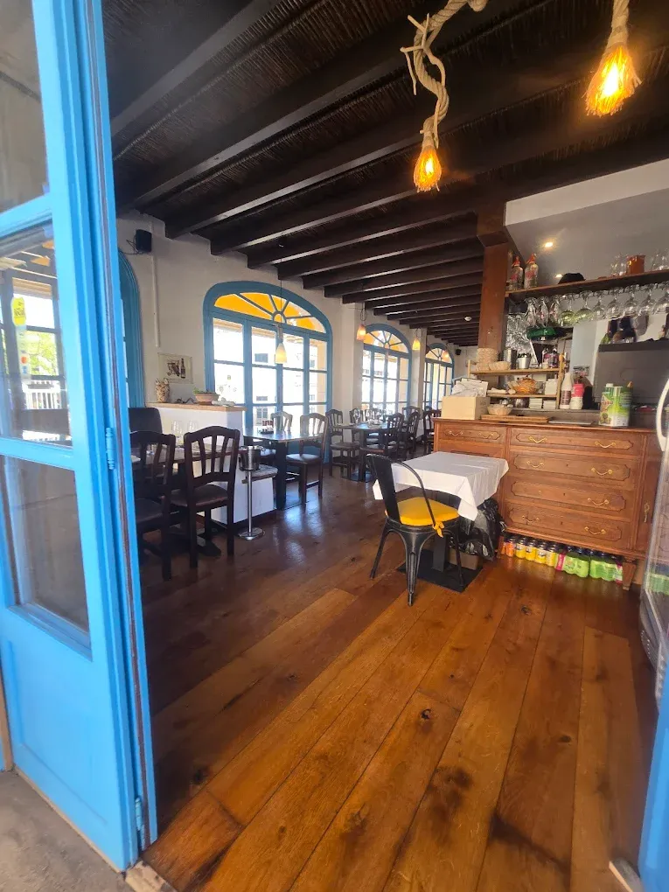
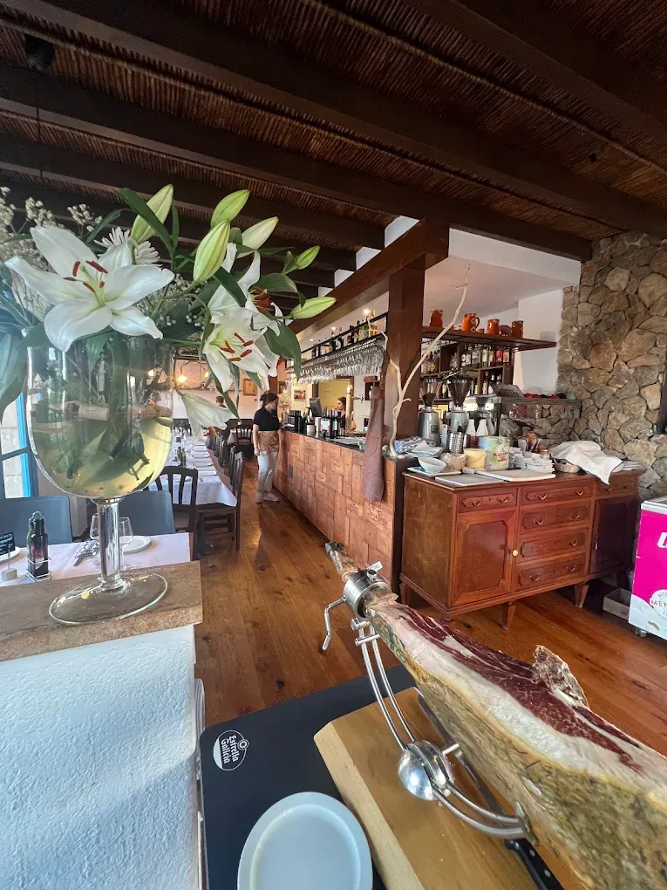
Welcome
Honest food, leisurely meals.
Fonoll Marí d'Artà is a family project created to share fresh, approachable Mediterranean cooking rooted in tradition. Every dish leaves our kitchen with the care we would give to guests in our own home.
Find us in Artà, Mallorca: a welcoming place for family lunches, dinners with friends and discovering the flavours of the island.
Our kitchen
Rice dishes with a taste of Mallorca.
Our paellas, fideuás and rice dishes are cooked to order and served for sharing. Good produce, fire and time.
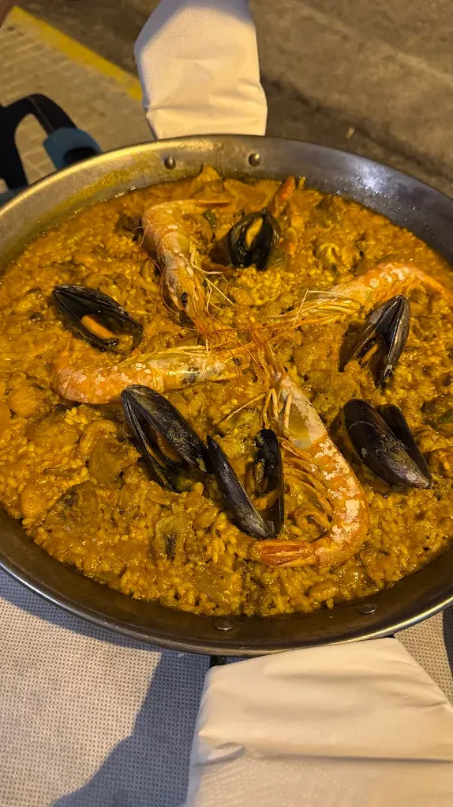
Mixed paella
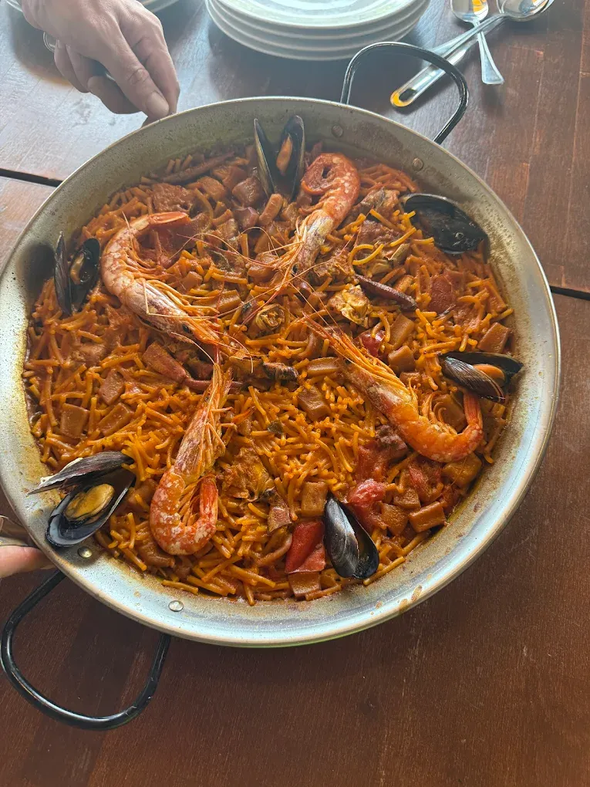
Mixed fideuá
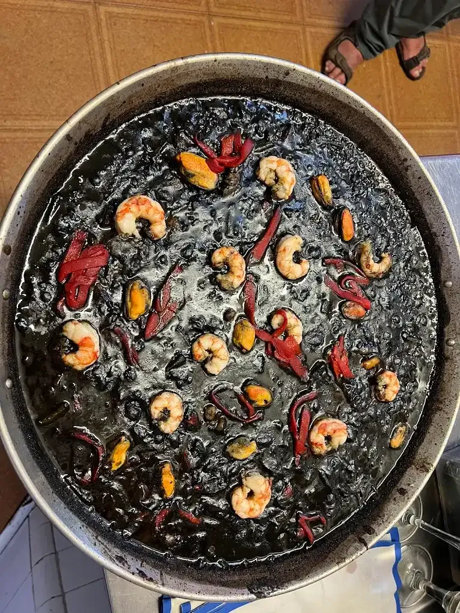
Black rice
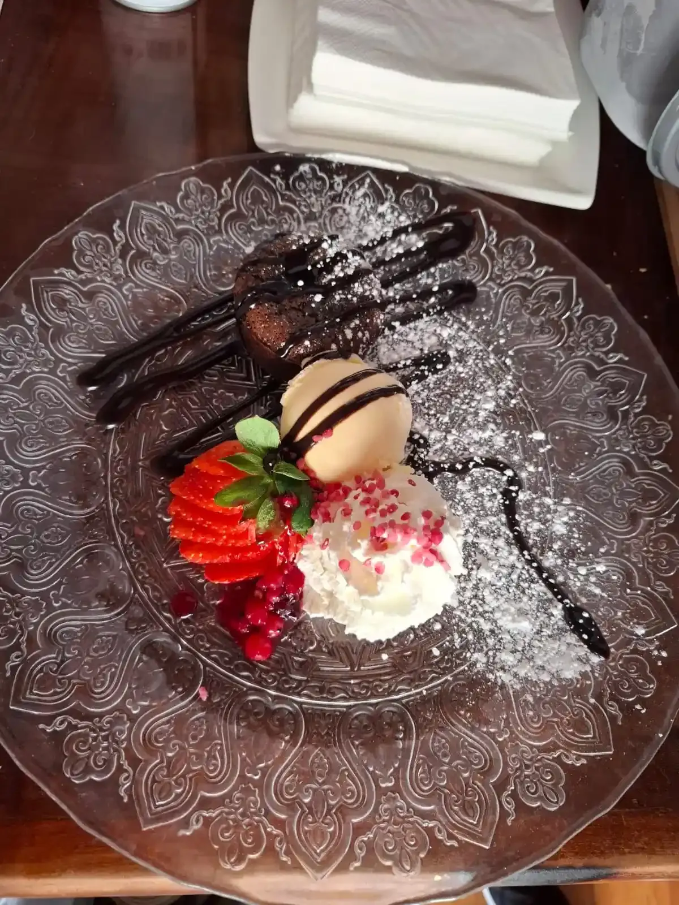
Chocolate coulant
The restaurant
A quiet corner of Artà.
Wood, stone and Mediterranean light. Indoor dining room and outdoor seating.
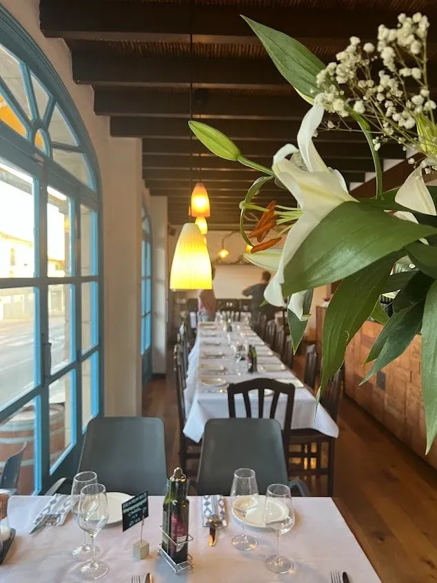
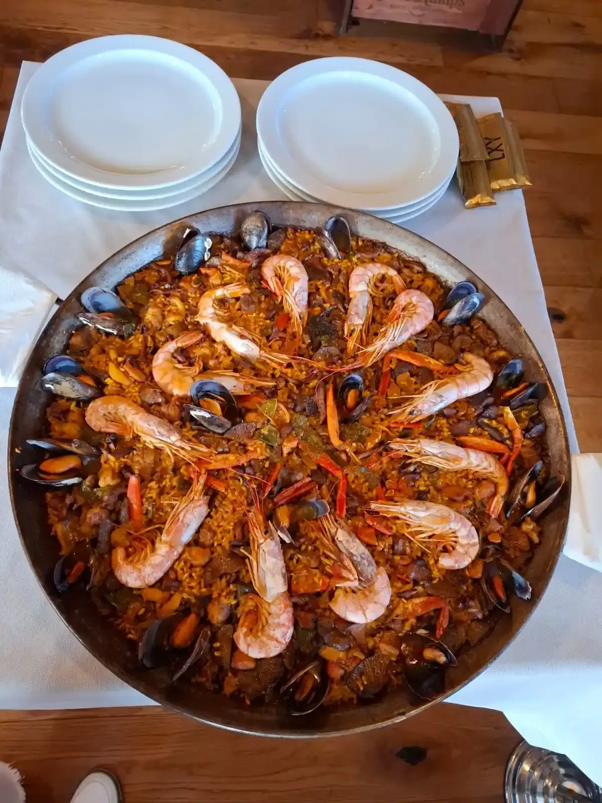
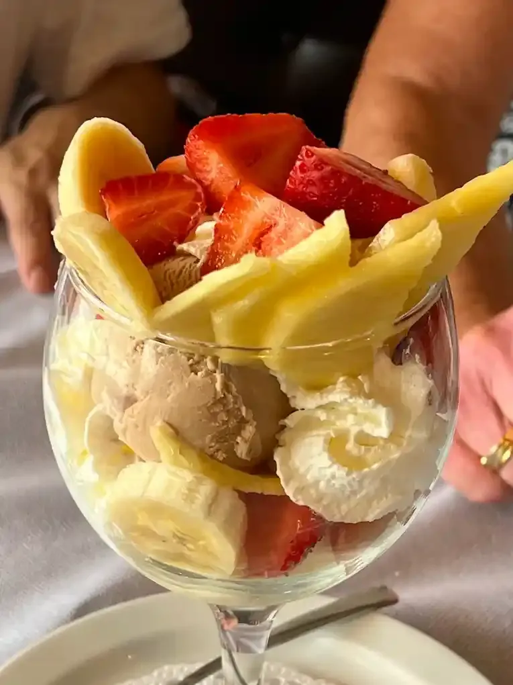
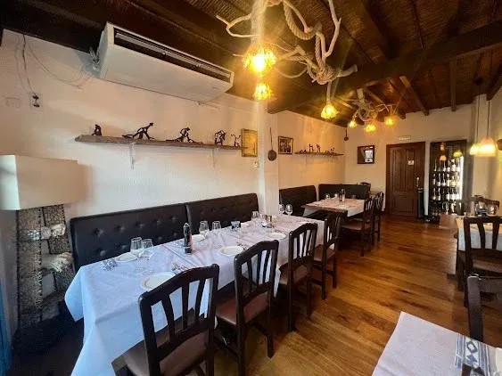
Visit us
Your table in Artà.
Book, check availability or order takeaway directly on WhatsApp.
07570 Artà, Mallorca
11:00–15:30 · 19:00–22:30
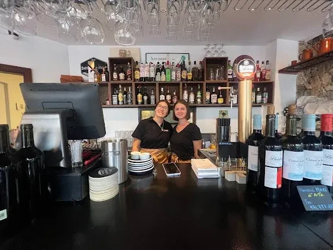